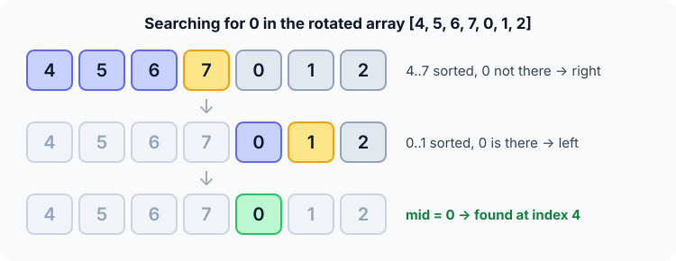

Prerequisites
- Binary search, which this modifies.
- Rotation: moving the first $k$ elements to the end, e.g.
[0, 1, 2, 4, 5, 6, 7]→[4, 5, 6, 7, 0, 1, 2]. - Checking whether a value lies in a range: $a \le x < b$.
The analogy
Everyday analogy
Picture a clock face read starting from 4 o'clock: 4, 5, 6, 7, then it wraps to 12, 1, 2. Cut it anywhere into two halves, and at least one half runs in plain order with no wrap.
The algorithm uses that half. You can tell at a glance whether the target fits inside the ordered half; if it doesn't, it must be in the other one.
How it works
Data requirement: a sorted array that has been rotated, with distinct values.
Start with one search by hand
Look for 0 in [4, 5, 6, 7, 0, 1, 2], indices 0 to 6. Guess first, then open "Check".
Example: predict before you read
Step 1. The middle is index 3, value 7. Compare a[0] = 4 with 7. Predict: which half is sorted?
Check
4 ≤ 7, so the left half [4, 5, 6, 7] is sorted.
Step 2. Cover the next line and guess: is 0 inside the sorted range 4..7? Where do you go?
Check
No, 0 < 4. So it must be in the other half: keep indices 4..6.
Step 3. The middle of 4..6 is index 5, value 1. a[4] = 0 ≤ 1, so the left part [0, 1] is sorted. Predict the next move.
Check
0 is in 0..1, so go left to index 4: a[4] = 0, found. 3 probes.

Quick recall: Before reading further, cover the text above and say out loud: how do you tell which half is sorted?
Check your answer
If a[lo] ≤ a[mid], the left half is sorted; otherwise the right half is.
Finish the picture
Search the same array for 5.
- Step 1. Middle 7, and the left half 4..7 is sorted. Predict: is 5 in it?
Check
Yes, 4 ≤ 5 < 7, so keep the left side, indices 0..2.
- Step 2. The middle of 0..2 is index 1. Predict the result.
Check
a[1] = 5: found in 2 probes.
Quick recall: Without scrolling up, say out loud: why do we only test the target against the sorted half?
Check your answer
Only a sorted half has a simple "is it between the ends?" test. If the target fails that test, it can only be in the other half.
The rule in plain words
Look at the middle. If it's the target, done. Otherwise decide which half is sorted by comparing a[lo] with a[mid].
If the target fits between the ends of that sorted half, search there. If not, search the other half.
Quick recall: Before you read the code, write the three steps of one round in your own words. Then check below.
Check your answer
1. Check the middle. 2. Find which half is in order. 3. If the target is within that half's range, keep it; otherwise keep the other half.
The code
Read this code after you have done one search by hand. It will make more sense.
int search_rotated(const int a[], int n, int x) {
int lo = 0, hi = n - 1;
while (lo <= hi) {
int mid = lo + (hi - lo) / 2;
if (a[mid] == x) return mid;
if (a[lo] <= a[mid]) { /* left half is sorted */
if (a[lo] <= x && x < a[mid]) hi = mid - 1;
else lo = mid + 1;
} else { /* right half is sorted */
if (a[mid] < x && x <= a[hi]) lo = mid + 1;
else hi = mid - 1;
}
}
return -1;
}Definition
What you just did, in one line: rotated array search is binary search that, at each step, finds the sorted half and keeps it only if the target lies within its range.
flowchart TD
A["mid = middle of lo..hi"] --> B{"a[mid] == x ?"}
B -->|yes| C["Return mid"]
B -->|no| D{"a[lo] <= a[mid] ?"}
D -->|"yes: left sorted"| E{"a[lo] <= x < a[mid] ?"}
D -->|"no: right sorted"| F{"a[mid] < x <= a[hi] ?"}
E -->|yes| G["Go left"]
E -->|no| H["Go right"]
F -->|yes| H
F -->|no| G
How fast is it?
Quick recall: Before looking at the formula, predict: does the rotation make the search slower than ordinary binary search?
Check your answer
No, with distinct values. Every round still throws away half the range, so it is still logarithmic.
Each round halves the range, exactly like binary search, so at most:
$$\lfloor \log_2 n \rfloor + 1 \text{ rounds} \;=\; O(\log n).$$With duplicates, such as [2, 2, 2, 3, 2], a[lo] == a[mid] can't tell which half is sorted, and the worst case drops to $O(n)$.
| Best | Average | Worst | Extra space | Data requirement |
|---|---|---|---|---|
| $O(1)$ | $O(\log n)$ | $O(\log n)$, or $O(n)$ with duplicates | $O(1)$ | Rotated sorted, distinct values |
Warning
Use <= in a[lo] <= a[mid]. When the range has two elements, lo == mid, and a strict < would wrongly treat the left "half" as unsorted.
Exam tip
The one sentence examiners want: "at least one half is always sorted, so test the target against that half". Add "$O(\log n)$ with distinct values, $O(n)$ with duplicates".
Common mistakes
- Testing the target against the unsorted half, where "between the ends" means nothing.
- Mixing strict and non-strict bounds: the sorted-left test is
a[lo] <= x < a[mid], becausea[mid]was already checked. - Promising $O(\log n)$ when duplicates are allowed.
Try it yourself
Exercise 1 (warm-up)
Search for 2 in [4, 5, 6, 7, 0, 1, 2]. What happens in round 1?
Hint
The first middle is 7 again, and the left half is sorted.
Answer
2 is not in 4..7, so go right to indices 4..6. The middle 1 has a sorted left part 0..1 that doesn't hold 2, so go right: a[6] = 2 is found.
Exercise 2 (a bit harder)
Search for 3 in [6, 7, 1, 2, 3, 4, 5]. Here the right half is sorted in round 1. List the probes. Write your answer down before you open it.
Show answer
Middle index 3 (value 2): a[0] = 6 > 2, so the right half 2..5 is sorted and 3 is in it, so go right to 4..6. Middle index 5 (value 4): the left part 3..4 is sorted and holds 3, so go left: a[4] = 3, found. Probes: 2, 4, 3.
Did you know?
Did you know?
This is one of the most common coding-interview questions (it's LeetCode problem 33), because it tests whether you understand why binary search works, not just its code.
The same idea, "find the part that's ordered and reason about it", also finds the rotation point, which is the minimum, in $O(\log n)$.
Key points to remember
If you remember one thing from each line, remember the because.
- One half is always sorted because the rotation creates only one "wrap" point, and it can be in only one half.
- We test the target against the sorted half because only there does "between the ends" mean "inside".
- It is $O(\log n)$ with distinct values because each round still throws away half the range.
- Duplicates can make it $O(n)$ because
a[lo] == a[mid]no longer reveals which half is sorted. - Extra space is $O(1)$ because it keeps only
lo,hiandmid.
Self-check questions
Answer these in order, out loud. They follow the page, so your answers become the script of your video.
- How is a rotated array like a clock read from 4 o'clock?
Sample answer
It runs in order, wraps around once, then runs in order again. Cut it in two, and at least one half has no wrap, so it's plainly sorted.
- Walk through a search for 0 in [4, 5, 6, 7, 0, 1, 2].
Sample answer
Middle 7: the left half 4..7 is sorted but doesn't hold 0, so go right. Middle 1: the part 0..1 is sorted and holds 0, so go left. a[4] = 0, found.
- Why does the code compare
a[lo]witha[mid]?A good answer says what
a[lo] ≤ a[mid]proves.Sample answer
If
a[lo] ≤ a[mid], there's no wrap between them, so the left half is sorted. Otherwise the wrap is on the left, which means the right half is sorted. - So what is rotated array search, in one sentence?
Sample answer
It's binary search that finds the sorted half each round and keeps it only if the target lies within it.
- Why does every round still remove half the range?
Sample answer
Each round decides between the left and right of
mid, exactly like binary search. Only the way of deciding is different. - What are its best, average and worst cases?
Sample answer
Best $O(1)$, average and worst $O(\log n)$ with distinct values, but $O(n)$ in the worst case with duplicates. Extra space $O(1)$.
- Why do duplicates break the $O(\log n)$ guarantee?
A good answer gives a case where you can't decide.
Sample answer
In [2, 2, 2, 3, 2],
a[lo],a[mid]anda[hi]are all 2, so you can't tell which half is sorted. You may have to shrink the range one step at a time. - If you had to teach this to a friend in 2 minutes, what would you leave out, and why?
Sample answer
I'd leave out the strict-versus-non-strict bounds and the duplicates case. I'd keep the clock analogy, the search for 0, and "one half is always sorted, so test against it, $O(\log n)$".
External resources
- GeeksforGeeks: Search in a rotated sorted array: two approaches with code.
- LeetCode 33: Search in Rotated Sorted Array: practise the exact problem with test cases.
- Wikipedia: Binary search: the base algorithm and its variations.
Videos
- YouTube search: search in rotated sorted array explained: pick a walkthrough.